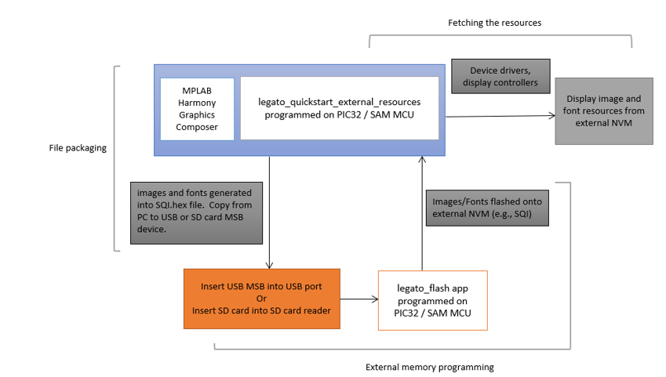
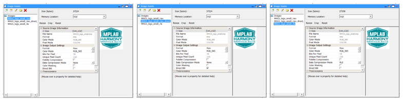
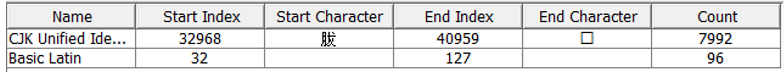

|
MPLAB® Harmony Graphics Suite
|
|
MPLAB® Harmony Graphics Suite
|

This demonstration provides a touch-enabled starting point for reading images, string, and multiple fonts from both internal and external non-volatile memory (NVM).
This demonstration runs on:
| MPLABX Configuration | Board Configuration |
|---|---|
| legato_qs_x_r_e54_cult_cpro_parallel.X | SAM E54 Curiosity Ultra Development Board with a 24-bit passthrough GFX interface card and a maXTouch Xplained Pro Extension Kit |
| legato_qs_x_r_e70_xu_tm4301b.X | SAM E70 Xplained Ultra Evaluation Kit using LCC software display controller to drive the High-Performance 4.3" WQVGA Display Module with maXTouch® Technology |
| legato_qs_x_r_mzef_cu_tm4301b.X | Curiosity PIC32MZ EF 2.0 Development Board using LCC software display controller to drive the High-Performance 4.3" WQVGA Display Module with maXTouch® Technology |
The legato_quickstart_external_resources (external flash reader) application demonstrates reading multiple images, multi-lingual strings and multiple font assets from both internal and external non-volatile memory (NVM). The external resources are pre-programmed into the NVM using the legato_flash demonstration application. The intent of legato_quickstart_external_resources (external flash reader) application is to demonstrate Legato Graphics Library’s ability to support assets stored on external NVM. Another intent is to highlight possible draw performance drawbacks with these techniques and to serve as a guiding post for UI application designers on their judicious use.
Refer to legato_flash for external NVM programming information.
Applications requiring multiple images or non-alphabet-based languages with large number of glyphs, have a very large NVM requirement for their graphics resources. In such applications, storing these graphics resources on-chip may be inefficient or impossible. The solution is to store the graphics resources to off-chip NVM, thereby preserving the on-chip NVM for program memory and allowing for more complex functional features.
The legato_quickstart_external_resources (external flash reader) application populates some of its user interface from assets stored on on-chip NVM and other parts of it from assets stored as binary data on an external NVM. The resources are previous copied into the external NVM using the legato_flash application.
To demonstrate how to access graphics resources stored on an external memory device, three components are needed:
• File Packaging • Bootloader Application • Fetch Application
The following figure shows the external resources process diagram.

The same image, stored externally as five different encoding formats, are demonstrated: Uncompressed RAW, Run-Length Encoded (RLE), Palette Compressed images, JPEG and PNG.

The legato_quickstart_external_resources (external flash reader) application also demonstrates the ability of the Legato Graphics Library to support multiple languages in the same application build. One language is alphabetic (English) and the other is non-alphabetic (Chinese). English is supported via the Basic Latin Unicode Range (ASCII 32 to 127).

For Chinese, the MPLAB Harmony Graphics Composer’s built-in automatic glyph filter is overridden to use the enter CJK Unified Ideographs Extension 1 (UTC 32,968 to 40,959). This covers the most used kanji glyphs. The glyphs for both languages are generated as binary data, programmed into external NVM, retrieved and displayed from external memory at runtime.

legato_qs_x_r_e54_cult_cpro_parallel.X legato_qs_x_r_e70_xu_tm4301b.X legato_x_r_mzef_cu_tm4301b.X
 1.8.18
1.8.18